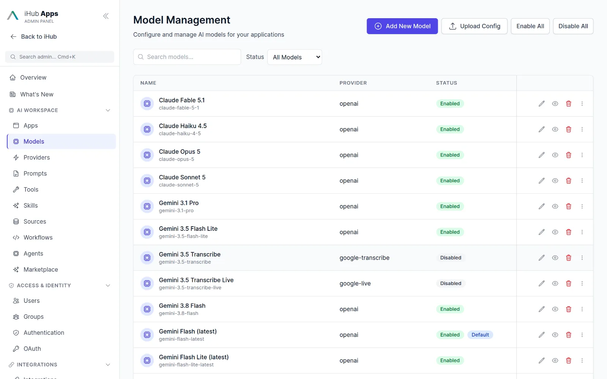
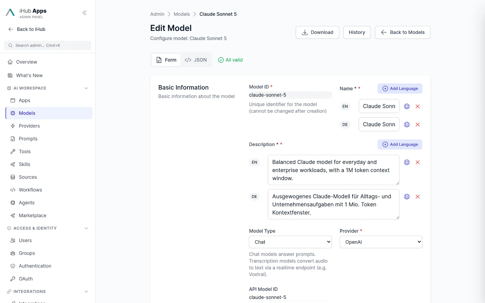
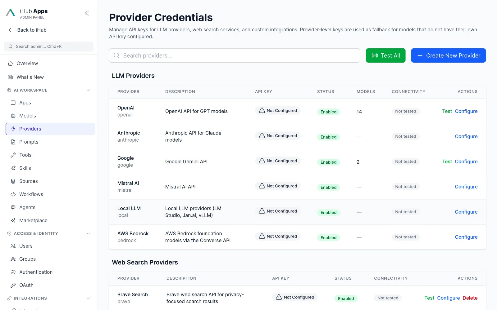

All models in one place.
Use any model inside chat, apps, workflows and agents or via the API. Bring your own keys, host your own models, and decide per group who may use what.

Providers
Eight adapters cover the cloud providers and everything that speaks the OpenAI protocol.
| Provider | Models | Notes |
|---|---|---|
| OpenAI | GPT-5 family via the Responses API, GPT-4 class via Chat Completions | Native web search, audio input, tool calling |
| Anthropic | Claude Fable 5.1, Opus 5, Sonnet 5, Haiku 4.5 | Thinking levels, native web search |
| Gemini 3.x Pro and Flash, Flash Lite, image models, transcription | Grounding, vision, audio, image generation | |
| Mistral | Mistral Large, Medium, Small; Voxtral realtime | Realtime voice transcription via vLLM |
| AWS Bedrock | Claude, Nova, Llama 3.3 and 4, Mistral, Pixtral, Cohere Command R, Jamba, DeepSeek | Converse API, regional and global inference profiles |
| Azure OpenAI | Your Azure deployments | OpenAI adapter with custom URL |
| Local / OpenAI-compatible | vLLM, LM Studio, Jan.ai, Ollama, llama.cpp, any gateway | Auto-discovery via /v1/models, schema sanitizing, reasoning parser |
| IntraFind | iAssistant conversation (grounded RAG), IntraFind-hosted GPUs | Enterprise search as a model; German data centres |
Model files are plain JSON. Add a new model by dropping a file into the content folder or through the admin UI; no restart required.
Control what users may choose.
Per app, per group, per chat
An app can start with a preferred model, restrict the selectable models or hide the selector entirely. Groups restrict which models their members may use at all. Users switch models mid-conversation when allowed.
- Context window and output limits per model
- Capability flags: tools, vision, audio, image generation
- Model hints: information or warning banners for data classification

Bring your own keys, encrypted
API keys are stored AES-256-GCM encrypted per provider or per model. Test a model with one click, clone it, and auto-discover what a local server currently has loaded.

Providers as building blocks
Providers hold the technical connection: endpoint and credentials. They also cover web search (Brave, Staan, Qwant) and IntraFind services, so one page shows every external dependency.

Compare before you commitPreview
Compare mode sends one prompt to two models. Evaluate a cheaper model, a European provider or a local deployment against your current default with real prompts.

Three ways to run models.
Cloud APIs
Use your own accounts with OpenAI, Anthropic, Google, Mistral, AWS or Azure. iHub adds the permission layer, the audit trail and the apps.
IntraFind-hosted GPUs
Dedicated GPUs in German data centres, tenant-separated, end-to-end encrypted, IP allowlisting and no training on your data.
Your own hardware
Point iHub at vLLM, LM Studio, Jan.ai or Ollama for fully air-gapped operation. Auto-discovery picks up whatever model is loaded.
Questions & answers
When are new models available?
As soon as you add them. A model is a JSON file with URL, provider, limits and capability flags; the admin UI edits it live. Releases add new default models regularly, see the changelog.
Can I mix providers in one app?
Yes. An app can allow several models from different providers; a workflow can use a different model per node.
Is there a model router?
Not built in. Apps set a preferred model and allowed alternatives; users or admins choose. Compare mode helps evaluate candidates.
Does iHub support image generation and voice?
Image generation and editing through Gemini image models; voice input through the browser, Azure Speech or a self-hosted realtime model such as Voxtral on vLLM.
The essential AI stack for your company.
Simple for business users. Ready for advanced use cases. Governed by IT.
Chat
Model-agnostic chat for everyone in the company.
Learn more →Apps
Ready-made AI assistants for recurring tasks.
Learn more →Workflows & Agents
Multi-step automation with human approval.
Learn more →Integrations
Tools, MCP, Outlook, browser, Nextcloud, Teams.
Learn more →API
OpenAI-compatible API, MCP gateway, OAuth.
Learn more →Run iHub Apps in 60 seconds.
One command installs the standalone binary. No Node.js, no Docker, no database. Open http://localhost:3000, add a model key, and your team has 24 AI apps.
curl -fsSL https://raw.githubusercontent.com/intrafind/ihub-apps/main/install.sh | sh